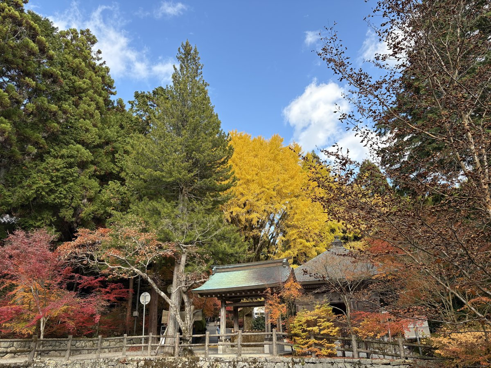

播州清水寺
兵庫県加東市平木1194
掲載時点の料金です。最新の料金は公式サイトでご確認ください。
入山料は2026年9月30日まで一般500円・高校生300円。2026年10月1日から一般800円・高校生500円に改定され、中学生以下は引き続き無料
備考・犬連れでのポイント
標高552mの御嶽山の山上に伽藍が広がる天台宗の古刹で、西国三十三所第25番札所。
境内は甲子園球場1.3個分と広く、お堂の中を除けば愛犬と一緒に参拝できる。
ドッグラン以外の境内では必ずリード着用のこと。大講堂・根本中堂・薬師堂などの堂内へは犬の立ち入り不可のため、堂内は入口までの参拝になる。
2021年春に僧坊跡を整備して造られた山のお寺のドッグランがあり、約170平米を高さ1.5mの木製フェンスで囲んで手前が小型犬エリア・奥が中型犬と大型犬エリアの2区画。
ドッグランの利用料は無料で飼い主の入山料だけで使えるが、狂犬病と3種以上の混合ワクチンの接種証明（いずれも1年以内のもの）の用意と利用登録が必要とする情報が複数あり、寺の公式には記載が無い。
証明書のコピーを持参のうえ、事前に問い合わせるのが確実。犬の健康長寿を祈祷したワンコお守り福手御守の授与もあり、大2,000円・小1,800円。
入山料は一般500円・高校生300円・中学生以下無料で、車の場合は山上へ上がるきよみず登山道の料金所で支払う。
山上の駐車場は無料で普通車300台以上、大型バスも駐車可。登山道入口には身障者用区画と多機能トイレがあり、境内車道の途中にもトイレあり。
拝観は8:00〜17:00で入場は16:30まで、年中無休。
紅葉の見頃はカエデ・イチョウ・ドウダンツツジが11月中旬で、山上のため平地よりやや早く色づく。
境内は仁王門から薬師堂付近までが舗装された車道で、その先は玉砂利の参道、大講堂より先は階段になる。
勾配の急な箇所があるため足元に注意。麓から歩いて登る徒歩登山道もある。
最新情報は公式サイトで確認のこと。